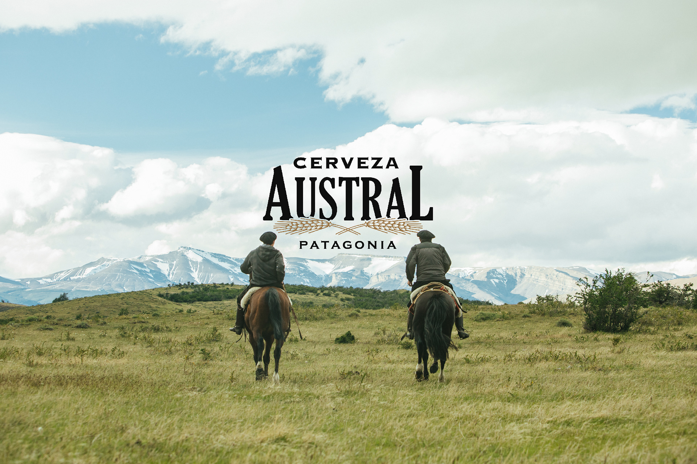

En 1896 José Fischer, maestro cervecero alemán, llega a Punta Arenas con el objetivo de instalar la primera planta cervecera del país. Con este sueño en mente, José funda “Cervecería La Patagona”, conocida actualmente como Cervecería Austral, la más austral del mundo. La cervecería está ubicada en el mismo lugar desde el año de su fundación, sin embargo, la ciudad creció e hizo que ésta quedara ubicada en medio de Punta Arenas, conviertiendo a Austral en un símbolo para la ciudad y la región, siendo un gran atractivo turístico para todos los que visitan la zona.
Con una tradición cervecera centenaria, Cervecería Austral ha logrado conservar sus procesos productivos casi inalterados, preservando así lo que alguna vez José Fischer formó, una cerveza de sabor único, un sabor con el carácter del fin del mundo..
Fabricación del Mosto
Todo comienza con la preparación de los granos de cebada malteada, los cuales pasan por un molino que cuidadosamente muele el interior y deja entera la cáscara. Lugo, se realiza la maceración, proceso en el que junto al agua y temperatura, se transforman los almidones de los granos en azúcares fermentables. A continuación es enviado al filtro, donde las cáscaras del grano permiten que el líquido fluya y así el mosto se envía al hervidor donde se concentran los azúcares, se esteriliza el mosto y se incorporan los lúpulos responsables del amargor característicos de nuestra cerveza.

Fermentación
Cuando el mosto se enfría llegando a 10ºC está listo para el proceso de fermentación. Aquí se dosifica la levadura, responsable de convertir los azúcares en alcohol y generar el CO2, elemento que aporta las burbujas, tan necesarias en una buena cerveza. Este proceso dura entre 7 y 8 días, donde es monitoreado mediante muestras para asegurar su calidad, verificando el proceso fermentativo.
Reposo
Una vez terminada la fermentación, se enfría el estanque, decanta la levadura y se retira habiendo cumplido su trabajo. El líquido, que se conoce como cerveza verde es traspasado a los estanques de reposo por 20 a 25 días en bajas temperaturas, logrando la estabilidad de la cerveza.
Filtración y Envasado
El proceso de filtración es clave para darle el color, brillo y transparencia a la cerveza, eliminando los sólidos en suspensión. Terminado este proceso, la cerveza está lista para ser pasteurizada y envasada.
Estas materias primas se incorporan en los cuatro procesos claves de la elaboración de la cerveza

CEBADA
Malteada, fuente de almidones
LÚPULO
Respondable de su aroma y sabor característico
LEVADURA
Clave en la graduación alcohólica
AGUA
Pura de la Patagonia, el elemento esencial
Actualmente Cervecería Austral cuenta con 7 variedades: Lager, Calafate, Patagona 508, Yagán, Torres del Paine, Ruibarbo y su último lanzamiento, 1520, un homenaje a los 500 años del Estrecho de Magallanes.

Cada una de las variedades de la cerveza tiene diferentes características, varían en su grado de alcohol, grado de amargura y diversas recomendaciones de maridaje para cada una. A continuación se hará una breve explicación de cada cerveza.
NUESTRAS VARIEDADES DE CERVEZAS
CALAFATE
Cerveza de color ámbar oscuro y un aroma intenso propio del calafate, un fruto de color negro azulado de sabor dulce y con propiedades antioxidantes proveniente de la Patagonia, lo que convierte a esta variedad de Austral en una cerveza única en el mundo.
LAGER
Cerveza de color dorado intenso, de espuma blanca y densa. En nariz, destacan las notas suaves y dulces de la mejor malta, mientras que en paladar se percibe un amargor equilibrado.
PATAGONA 508
La cerveza Patagona 508 luce con un color cobrizo intenso. En boca, de gran cuerpo, con un ligero tostado y un final intenso. Presenta un agradable aroma a naranjas confitadas, caramelo y toffee.
RUIBARBO
Ruibarbo es una cerveza de color dorado muy intenso, acompañada de un delicado y elegante toque de ruibarbo, una planta de origen asiático que se caracteriza por sus gruesos tallos rojizos.
1520
Esta cerveza es una lager sin filtrar, de color dorado intenso y levemente turbia. Espuma blanca, consistente y duradera.
YAGÁN
Esta cerveza es un tributo al pueblo indígena que habitaba las islas y canales del fin del mundo. Una cerveza negra, de gran cuerpo que retrata la grandeza de un pueblo que jamás será olvidado.
TORRES DEL PAINE
Un homenaje a nuestro Parque Nacional hecho cerveza, la octava maravilla del mundo retratada en una lager de gran cuerpo y sabor.
No esperes para probar cualquiera de nuestras cervezas que tienen un sabor único, un sabor con el carácter del fin del mundo.
